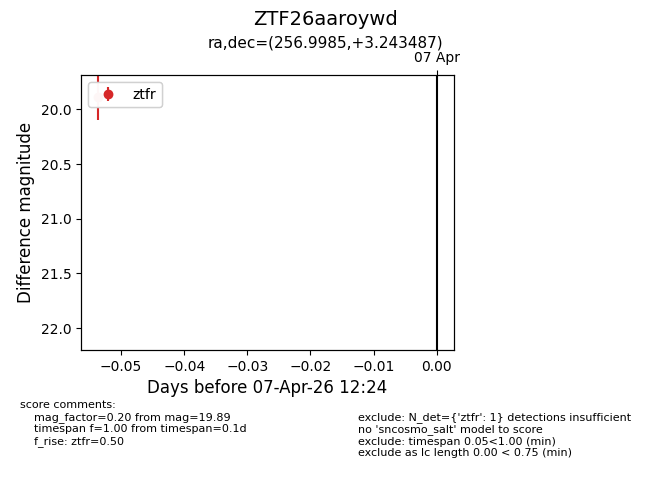
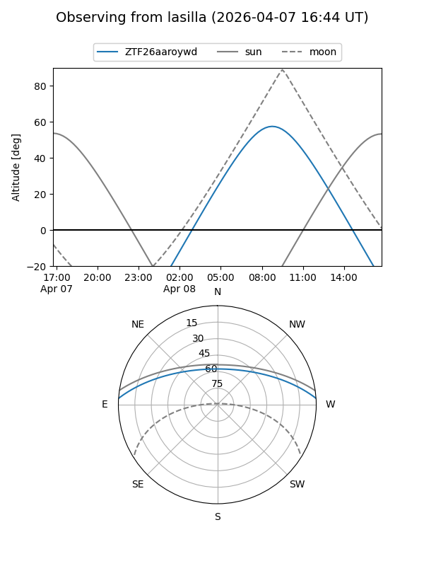
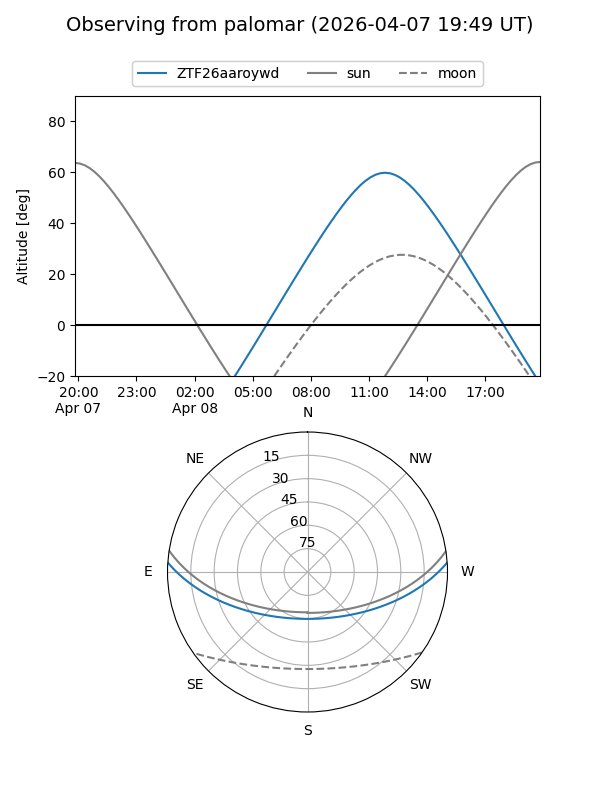

ZTF26aaroywd
Target ZTF26aaroywd at 2026-04-07 12:28
Aliases and brokers:
FINK: link
Lasair: link
ALeRCE: link
alt names
ZTF26aaroywd (ztf,fink_ztf)
Coordinates:
equatorial (ra, dec) = 256.9985,+3.24349
equatorial (HMS+DMS) = 17:07:59.65,+03:14:36.55
galactic (l, b) = (23.5636,+24.41734)
Flags:
Photometry:
last ztfr=19.89
1 ztfr detections
Lightcurve

Visibility


Additional plots